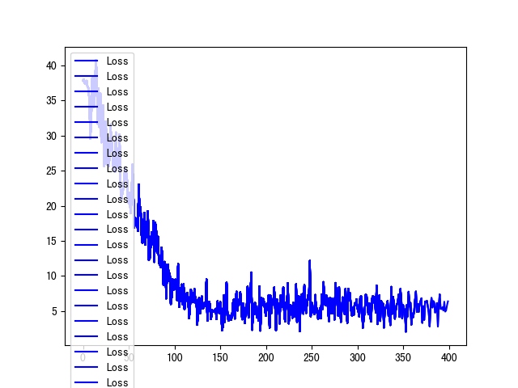

约 1 / 100,000作者自述误识率量级（README：十万分之一）
原文同时写「人脸识别实现一对多 十万分之一误检率 通过准确率 50%」。后文把同一观察说成：在该误识率下「50% 的准确率」「大体可以接受」，并说明人多了「相应的指标就越高」——这是作者对自己小样本的判断，不是公开榜单。
Results
下面两组数字来自 README 作者自述，不是本站复现，也不是第三方评测。没有延迟、吞吐或收入数据可引用，因此不写。
约 1 / 100,000作者自述误识率量级（README：十万分之一）
原文同时写「人脸识别实现一对多 十万分之一误检率 通过准确率 50%」。后文把同一观察说成：在该误识率下「50% 的准确率」「大体可以接受」，并说明人多了「相应的指标就越高」——这是作者对自己小样本的判断，不是公开榜单。
8 人README 写明的识别评估集规模
采集思路：用检测框从手机视频抽帧，再做仿射与旋转，使人脸居中正对。这套数据未进仓库。因此本站不能展示 1:N 检索界面，也不能声称可替换银行卡。
作者按相似度分档取阈值 S：
注意 README 在小标题处把「错误拒绝率」与 FAR、「错误接受率」与 FRR 交叉标注，后文公式与 效果评估.py 打印的 FRR（自己不认自己）、FAR（别人认成自己）更接近常见用法。本站不改写作者公式，只提醒阅读时以公式和脚本注释为准。
脚本对一串阈值循环，打印正确率、FRR、FAR，并在 FAR <= 0.00001 时输出「符合标准的情况」。这是作者自己的筛选条件，不是认证机构结论。

ArcFace/loss.png。
ArcFace/train.py 每个 epoch 把累积的 loss_list 画成蓝线并 savefig("./loss.png")。
图例重复「Loss」是原图现象，本站未重绘。该图只说明某次训练损失在下降，不能单独推出识别率或支付可用性。